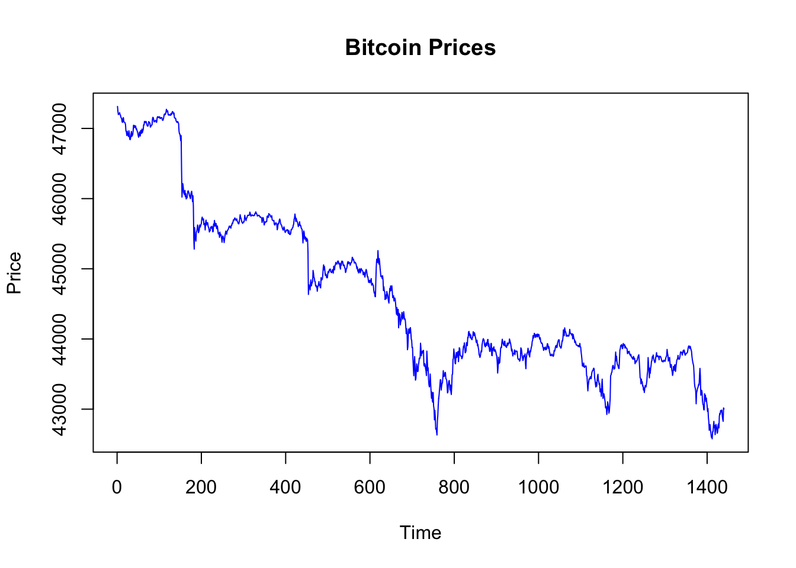
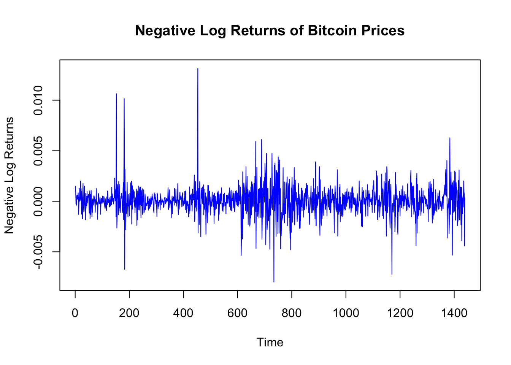
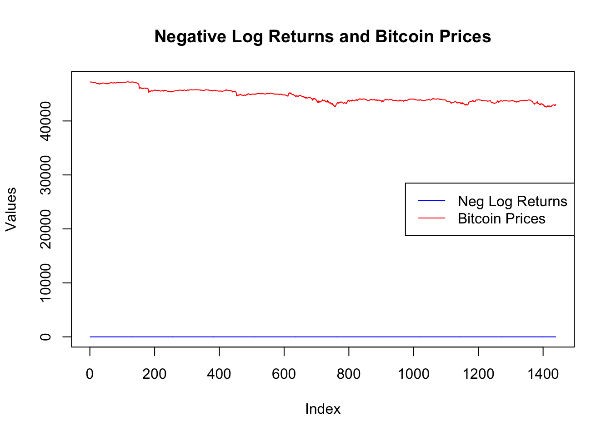
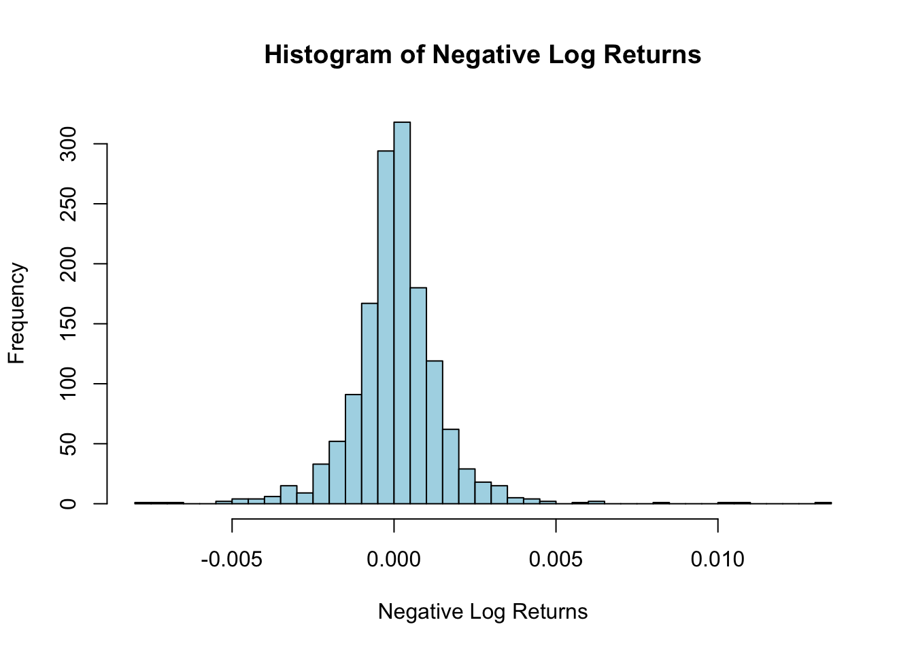
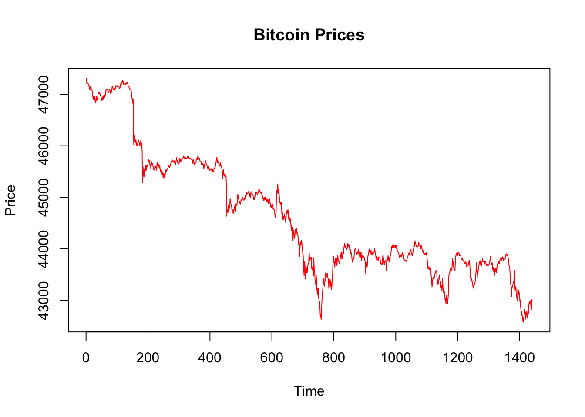
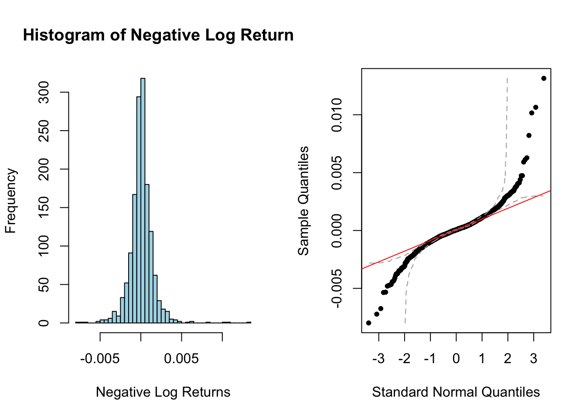
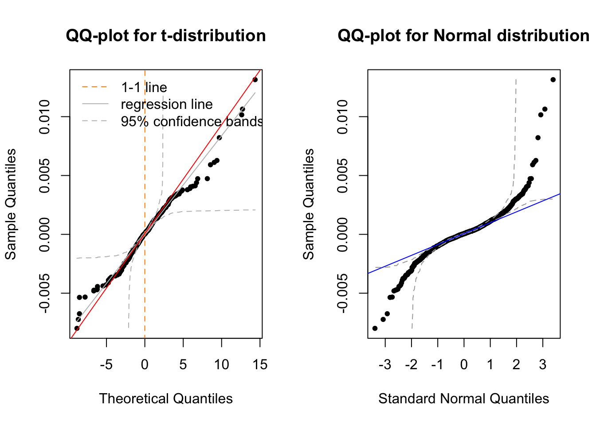
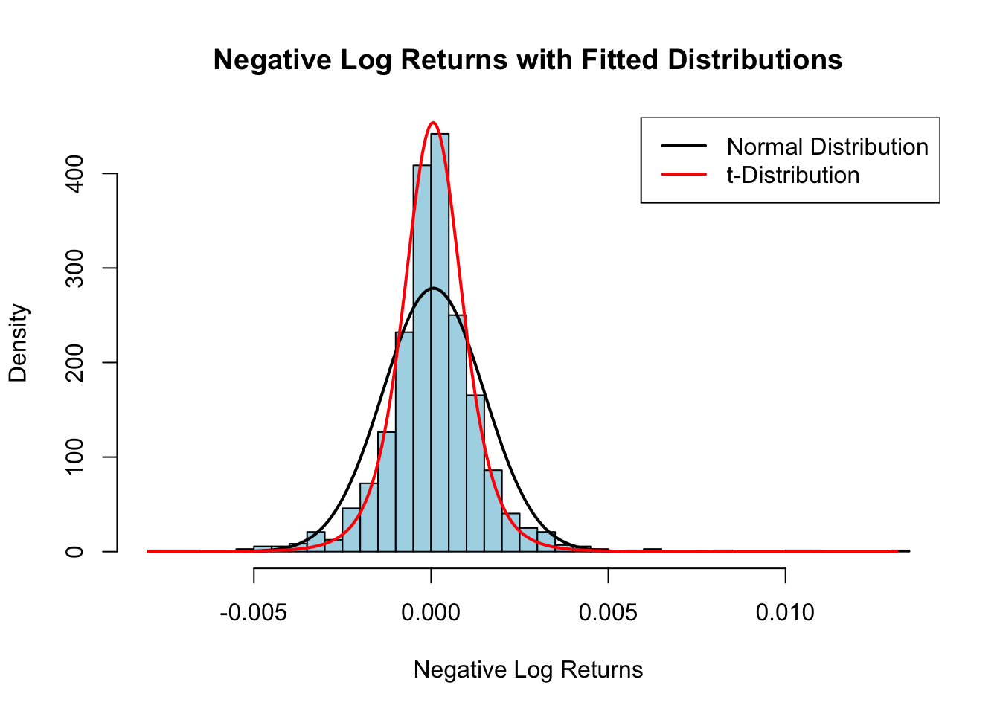

Lodrik Adam, Alexandra Boado, Sophie Daya, Jeff Macaraeg, Julien Perini
Published
October 20, 2024
Code
# Set the CRAN mirroroptions(repos =c(CRAN ="https://cloud.r-project.org"))# load the required packages and install them if they are not.source(here::here("code","setup.R"))# getiing the working directorywd <- here::here()# Loading the datacrypto_data <-read.csv(here("data", "crypto_data.csv"))# scaling factorscaling_factor <-100000
Part 1: Financial returns and normality
The working directory is set to: /Users/lodrik/Documents/GitHub/RA_Praticals
a) Load Bitcoin data and assess price stationarity
Question
Read in the Bitcoin data from file Crypto data.csv. Then, assess the stationarity of the (raw) Bitcoin prices.
First, let’s take a look at the Bitcoin Prices on a plot.
Code
## Step 1: Extract the Bitcoin pricesbitcoin_prices <- crypto_data$Bitcoin## Step 2: Plot the Bitcoin pricesplot(bitcoin_prices,type="l",col="blue", main="Bitcoin Prices",xlab="Time",ylab="Price")

The graph of the raw Bitcoin prices suggest that the series might not be stationary.
Let’s perform the Augmented Dickey-Fuller test to check if the raw Bitcoin prices are stationary.
Code
## Step 3: test for stationarityadf.test(crypto_data$Bitcoin)
Augmented Dickey-Fuller Test
data: crypto_data$Bitcoin
Dickey-Fuller = -2.4484, Lag order = 11, p-value = 0.3885
alternative hypothesis: stationary
Since the p-value is significantly bigger than 0.05, we can not reject the null hypothesis and therefore, we can conclude that the raw Bitcoin prices are non-stationary.
b) Create and plot Bitcoin negative log returns, assess stationarity
Question
Create a function to transform the Bitcoin prices into their negative log returns counterparts. Plot the latter series and assess their stationarity. To compare the series, also plot the negative log returns on a common scale.
Let’s create a function to compute the negative log returns of a given price series. We will then apply this function to the Bitcoin prices to compute the negative log returns.
Code
## Step 1: Create a function to compute negative log returnsnegative_log_returns <-function(prices) {return(-diff(log(prices)))}## Step 2: Use the fucntion on Bitcoin pricesneg_log_returns_bitcoin <-negative_log_returns(bitcoin_prices)
We can now plot the negative log returns series and the raw Bitcoin prices to compare.
Code
## Step 3: Plot the negative log returns seriesplot(neg_log_returns_bitcoin,type="l",col="blue", main="Negative Log Returns of Bitcoin Prices", xlab="Time",ylab="Negative Log Returns")

If we scale bitcoin prices and negative log returns, we can compare both time series on a plot with a common scale.
Code
# Top Plot: Plot both time series on the same graphtrimmed_bitcoin_prices <- bitcoin_prices[-1] # Make sure lengths matchplot(neg_log_returns_bitcoin,type ="l",col ="blue",ylab ="Values",xlab ="Index", main ="Negative Log Returns and Bitcoin Prices",ylim =range(c(neg_log_returns_bitcoin, trimmed_bitcoin_prices)))# Add Bitcoin prices on the same plotlines(trimmed_bitcoin_prices, col ="red")# Add a legendlegend("right",legend =c("Neg Log Returns", "Bitcoin Prices"),col =c("blue", "red"),lty =1)

Code
# Reset the plotting area to default settings (optional, for future plots)par(mfrow=c(1,1))
Code
# Set up the plotting area to have 3 rows and 1 columnpar(mfrow=c(1,1))# Bottom Left Plot: Plot the negative log returns seriesplot(neg_log_returns_bitcoin,type ="l",col ="blue", main ="Negative Log Returns of Bitcoin Prices", xlab ="Time",ylab ="Negative Log Returns")

Code
# Bottom Right Plot: Plot the Bitcoin pricesplot(bitcoin_prices, type ="l", col ="red", main ="Bitcoin Prices", xlab ="Time", ylab ="Price")

Visually, the negative log returns series does not appear to indicate a clear trend or seasonality. The variance, although it fluctuates in the middle, seems relatively constant. This observation suggests that the series may be stationary. To confirm this, we will perform the Augmented Dickey-Fuller test to assess the stationarity of the negative log returns.
Code
## Step 5: Test the stationarity of the negative log returns with the Augmented Dickey-Fuller testadf.test(neg_log_returns_bitcoin)
Augmented Dickey-Fuller Test
data: neg_log_returns_bitcoin
Dickey-Fuller = -11.035, Lag order = 11, p-value = 0.01
alternative hypothesis: stationary
Since the p-value is significantly smaller than 0.05, we can reject the null hypothesis and conclude that the negative log returns series is stationary.
c) Check negative log returns normality with histograms, QQ-plots, Anderson-Darling
Question
Are the negative log returns normally distributed? Draw histograms, check QQ-plots and use an Anderson-Darling testing procedure to answer this question.
Let’s first plot the histogram and QQ-plot of the negative log returns to visually assess the normality.
Code
## Step 1: Plot the histogram and QQ-plot of the negative log returnspar(mfrow=c(1, 2))# Plot the histogram of the negative log returnshist(neg_log_returns_bitcoin,breaks=50,col="lightblue", main="Histogram of Negative Log Returns",xlab="Negative Log Returns")# Plot the QQ-plot of the negative log returnsqqnorm(neg_log_returns_bitcoin)qqline(neg_log_returns_bitcoin,col="red")

Code
par(mfrow =c(1, 1))
The histogram of the negative log returns suggests that the data may follow a normal distribution. However, we need to perform a formal test to confirm this.
Code
## Step 2: Perform Anderson-Darling test for normalityad.test(neg_log_returns_bitcoin)
Anderson-Darling normality test
data: neg_log_returns_bitcoin
A = 26.277, p-value < 2.2e-16
Even though the Histogram suggest that the negative log returns follows a normal distribution, the p-value when performing the Andersen-Darling test is smaller than 5%. It indicates that the data does not follow a normal distribution. The Normal Q-Q plot suggest also that the data does not follow a normal distribution.
d) Fit t-distribution, compare with Normal via QQ-plot analysis
Question
Fit a t-distribution to the negative log returns using fitdistr(). Using a QQ-plot, decide whether the fit is better than with a Normal distribution, based on your answer in (c).
Let’s fit a t-distribution to the negative log returns and compare it with the normal distribution using a QQ-plot.
Code
## Step 1: Fit a t-distribution to the negative log returnsfit_t <-fitdistr(scaling_factor * neg_log_returns_bitcoin, "t") # Multiply by 100000 to avoid numerical issues
The t-distribution fit parameters are:
mean: 5.65
standard deviation: 84.15
degrees of freedom: 2.77
We can now compare the QQ-plot of the t-distribution with the QQ-plot of the normal distribution of question c).
Code
## Step 2: Create a QQ-plot for the t-distribution and the normal distributionpar(mfrow =c(1, 2))# Generate QQ-plot for t-distributiondf_t <- fit_t$estimate[3] # Degrees of freedom from the fitqqplot(rt(length(neg_log_returns_bitcoin),df=df_t), neg_log_returns_bitcoin,main="QQ-plot for t-distribution",xlab="Theoretical Quantiles",ylab="Sample Quantiles")qqline(neg_log_returns_bitcoin,col="red")# Generate QQ-plot for normal distributionqqnorm(neg_log_returns_bitcoin,main="QQ-plot for Normal distribution")qqline(neg_log_returns_bitcoin,col="blue")

Code
par(mfrow =c(1, 1))
As we can see, the QQ-plot for the t-distribution is closer to the 45-degree line than the QQ-plot for the normal distribution. This suggests that the t-distribution is a better fit for the negative log returns than the normal distribution.
e) Compare t-distribution and normal tails
Question
Compare the tails of the density of the t-distribution and the normal distribution. Can we expect more extreme, unexpected events in t-distribution or in normal distribution? What can you conclude about the extreme events of our bitcoin data?
To compare the tails of the t-distribution and the normal distribution, we will plot the density functions of both distributions and visually assess the differences.
Code
## Step 1: Fit the normal distribution to the negative log returnsfit_norm <-fitdistr(scaling_factor * neg_log_returns_bitcoin, "normal")# Generate a sequence of values for the x-axis (log returns)x <-seq(min(neg_log_returns_bitcoin), max(neg_log_returns_bitcoin), length =1000)## Step 2: Scale back the mean and sd for plotting (for both normal and t-distributions)# For normal distributionscaled_mean_norm <- fit_norm$estimate[1] / scaling_factorscaled_sd_norm <- fit_norm$estimate[2] / scaling_factor# For t-distributionscaled_mean_t <- fit_t$estimate[1] / scaling_factorscaled_sd_t <- fit_t$estimate[2] / scaling_factor# Density for the normal distribution using the scaled mean and sddens_norm <-dnorm(x, mean = scaled_mean_norm, sd = scaled_sd_norm)# Density for the t-distribution using the scaled parametersdens_t <-dt((x - scaled_mean_t) / scaled_sd_t, df = fit_t$estimate[1]) / scaled_sd_t## Step 3 : Plot the histogram of negative log returnshist(neg_log_returns_bitcoin,breaks =50,col ="lightblue",freq =FALSE, # For density plotmain ="Negative Log Returns with Fitted Distributions",xlab ="Negative Log Returns")# Add the normal distribution curvelines(x, dens_norm,col ="black",lwd =2,lty =1)# Add the t-distribution curvelines(x, dens_t,col ="red",lwd =2,lty =1)# Add a legendlegend("topright",legend =c("Normal Distribution", "t-Distribution"),col =c("black", "red"),lty =c(1, 1),lwd =2)

Visually, the tails of the t-distribution are heavier than those of the normal distribution. This means that the t-distribution assigns more probability to extreme events than the normal distribution. Therefore, we can expect more extreme, unexpected events in the t-distribution than in the normal distribution. This observation is consistent with the QQ-plot analysis in question d), where the t-distribution was a better fit for the negative log returns than the normal distribution.
Source Code
---title: Pratical 1 - Group 01date: todaydate-format: longauthor: Lodrik Adam, Alexandra Boado, Sophie Daya, Jeff Macaraeg, Julien Perinitoc: trueformat: htmlcode-fold: truecode-block-border-left: "#0d6efd"code-block-bg: truehighlight-style: githubcode-tools: true---```{r child = c("practical_11_final.qmd")}```